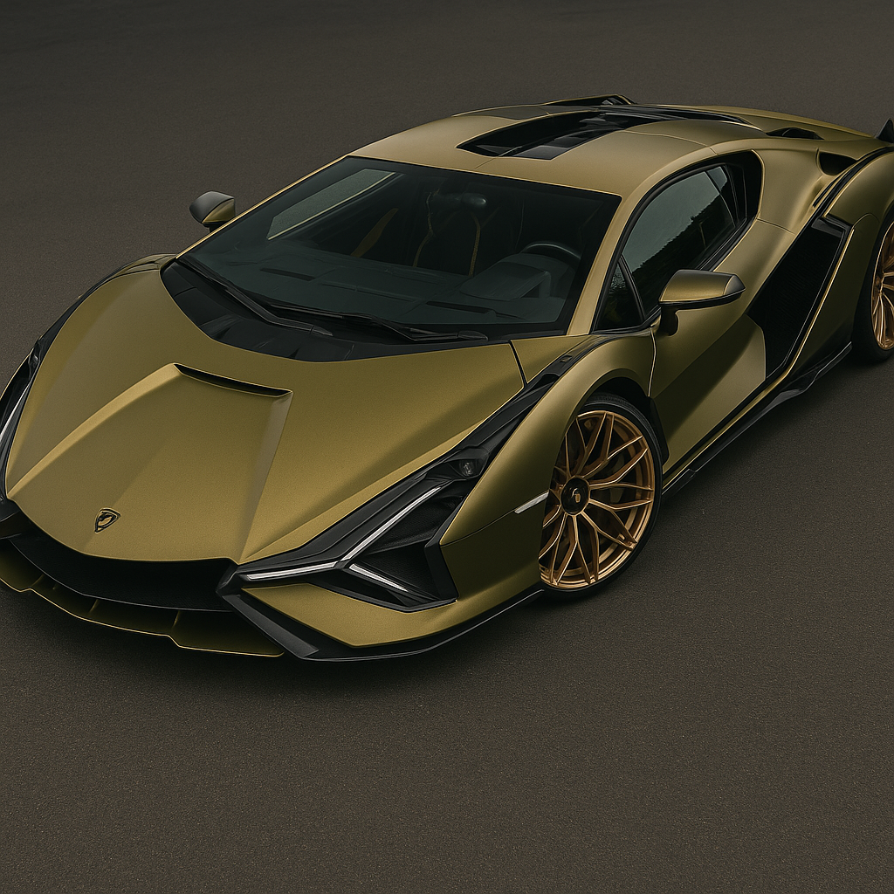

Lamborghini Sián
Datos interesantes
El primer Lamborghini híbrido usa supercondensadores en lugar de baterías. Tiene 819 hp y fue inspirado en el Countach clásico.
Características
- Motor V12 con sistema 48V
- 819 hp totales
- Supercondensador eléctrico
- Diseño agresivo exclusivo
Logros
- Primer híbrido de la marca
- Solo 63 unidades fabricadas
- Inspirado en el Countach
- Tracción total